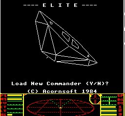
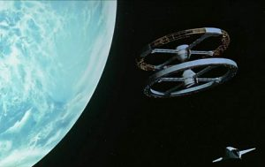
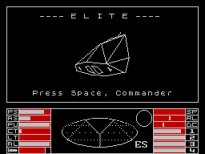
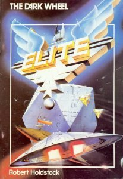
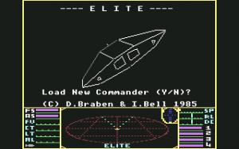

<section class="l-section"><div class="l-section-h i-cf"><p><strong>This is an archive of <a href="https://www.drewwagar.com/">Drew Wagar</a>&#8216;s lore guide, available here with his kind permission. Drew is no longer actively maintaining his lore pages, and they may not be accurate post v2.4 of Elite Dangerous.</strong></p>
<p>This is a rather ambitious series of articles, and will probably see some updates as folks let me know of all the bits I’ve missed along the way. Strictly speaking this isn’t a ‘lore’ document, as it is the history of the Elite games in ‘our’ universe. I haven’t seen a complete series charting this story from beginning until now attempted anywhere else, so I thought I’d have a go.</p>
<p><strong>The Original Elite, 1984 – 1992</strong></p>
<div style="width: 266px" class="wp-caption alignleft"><a ref="magnificPopup" href="https://canonn.science/wp-content/uploads/2017/10/elite1.gif"></a><p class="wp-caption-text">The original Elite by David Braben and Ian Bell</p></div>
<p>The Acorn Computer BBC Microcomputer System (the ‘beeb’ or BBC) was the ‘posh kids’ computer and heavily geared to educational use (benefiting from government subsidies, and thus appearing in many schools in the 1980s). Gaming was certainly not something its creators had as a primary design goal – it had no sprite hardware like the later Commodore 64. It was expensive (£335 in 1981 – the equivalent of around £1,400 today).It’s hard, at this stage, to return to the pre-Elite days of computer gaming in the early 80s. Back then games were largely simplistic, clones of arcade games or following very closely in their designs. Games were specifically designed to play through in a few minutes, featuring ‘lives’, ‘scores’ and ‘levels’. There were games that broke this mould, but they were few and far between, and often easily forgotten.</p>
<p>The story starts with Ian Bell having brought such a machine with him to Cambridge university where he was studying Mathematics in 1982. There he met David Braben, studying Physics. Both were computer aficionados of a type becoming common in the 80s. At that stage, Ian was working on a game known as “Freefall”, which was later published by “Acornsoft”, a relatively small publishing house, compared to Thorn EMI, in 1983.</p>
<p>David had a written a demo of 3D wireframe spacecraft, and a scrolling starfield on an Acorn Atom (a more primitive precursor to the BBC). This led both to discussions on the limitations of ‘then’ current game design. They were not the first with the 3D ideas, but they were the first to couple the idea with a purpose, a goal and something beyond just a score and ‘another go’.</p>
<p>Elite was born out of the dissatisfaction with the confines of traditional gaming. With no score, what was the purpose? The Thatcherite years of the 1980s provided the answer – money. But money isn’t a score, you can spend money. On what? On upgrades… so your ship had to be inferior to start with. What would be the purpose of upgrading your ship? To defeat other vessels. Why would those other vessels attack you? Because you carried a cargo… so trading was required alongside piracy. There was always a reason for the game mechanics, and the concept developed from there.</p>
<p>The true genius, however, lay in providing the player with choices. Yes, there were pirates out there, but you could become one yourself if you so desired. You had moral choices in the game, with no predetermined path.</p>
<div style="width: 310px" class="wp-caption alignleft"><a ref="magnificPopup" href="https://canonn.science/wp-content/uploads/2017/10/spaceships-move-slowly-and-realistically-through-space-while-classical-music-plays1.jpg"></a><p class="wp-caption-text">The 2001 docking sequence that inspired Elite.</p></div>
<p>Inspiration from Star Wars and 2001:A Space Odyssey are obvious in the action packed combat and more reserved, if very tense, docking sequences. Even Douglas Adams gets a nod with the “Mostly Harmless” rating – a microcosm of 80s zeitgeist.</p>
<p>Adams would probably have been quite enchanted with the other bit of genius design. Applying the limited, but still effective, power of those early 8-bit computers with the observations of one Leonardo Fibonacci (1175 – 1250) provided a means for a convincing representation of thousands of planetary systems using a technique later dubbed ‘procedural generation’ – far more data than the machines could actually store in their memories, but repeatable on demand.</p>
<p>Elite, now a working prototype, was pitched to Thorn EMI, one of the biggest games publishers at the time. The result was a disappointment (and a mistake on Thorn’s part similar to the chap from Decca who failed to sign up the Beatles). David and Ian were sent away with the recommendation that they simplify the game, something which would destroy the very essence of what they were trying to achieve.</p>
<div style="width: 266px" class="wp-caption alignleft"><a ref="magnificPopup" href="https://canonn.science/wp-content/uploads/2017/10/Elite_2_2.png"></a><p class="wp-caption-text">Elite on the ZX Spectrum</p></div>
<p>The game was refined further, and the only real goal, that of becoming ‘Elite’, was added at this stage. The game was originally to be named ‘The Elite’, but in conversation it eventually found its ultimate form. Simply, Elite. The cleverly realised scanner-scope was a last minute addition that required late-in-the-day alterations to the game manual.Their next stop was the aforementioned <em>Acornsoft</em>, with whom Ian already had a relationship. They were a small outfit, but to their credit, they grasped the genius of Elite. In a canny move, David arranged for <em>Acornsoft </em>to only have rights to the BBC version, allowing the possibility of lucrative ports to other platforms once the BBC version was released.</p>
<p>Two missions were added, giving a taste of the sort of in-game story telling that would pave the way for future games. One was to hunt down a stolen ‘Constrictor’ spacecraft, the other to ferry some top secret documents across the galaxy.</p>
<div style="width: 217px" class="wp-caption alignleft"><a ref="magnificPopup" href="https://canonn.science/wp-content/uploads/2017/10/Elite_The_Dark_Wheel_Novella.jpg"></a><p class="wp-caption-text">The Dark Wheel, by Robert Holdstock</p></div>
<p>Added into this mix was packaging that was significantly more ambitious than was normal for a computer game. <em>Acornsoft</em> really went to town with a manual, keyboard overlays, ship identification charts and even a specially commissioned novel by Robert Holdstock written to set the scene. <em>The Dark Wheel</em> was the starting point for the legends of Elite such as <a href="https://canonn.science/lore/drewwagar-raxxla/">Raxxla</a> and the <a href="http://www.drewwagar.com/progress-report/tionisla-a-little-background/">Tionisla Orbital Graveyard</a>.</p>
<p>Development stopped at some point during the summer of 1984. Thorpe Park (a small amusement park in the UK at the time) was hired out for the launch. It was well in time for Christmas that year, the 22nd of September 1984. It garnered gushing and ecstatic coverage in the popular press and television. Success was virtually instant.</p>
<div style="width: 310px" class="wp-caption alignright"><a ref="magnificPopup" href="https://canonn.science/wp-content/uploads/2017/10/131048-elite-commodore-64-screenshot-title-screen.png"></a><p class="wp-caption-text">Elite on the Commodore 64.</p></div>
<p>The ZX Spectrum version was ‘ported’ by Torus and published by Firebird (a brand of British Telecom) with the Commodore version being undertaken by David and Ian themselves. The Commodore version introduced ‘Trumbles’, a nod to Star Trek’s Tribbles, along with the familiar Blue Danube music when docking. The Spectrum version featured 5 new missions involving Supernovas, Rogue Asteroids, Thargoids and Cloaking devices. Each version of the game had its own unique foibles and differences to the original BBC version.Ultimately 107,898 recognised copies were sold for the BBC B Micro alone and eventually the game would go on to sell something like 600,000 to 1M copies across all the platforms it was eventually ported to, including the popular home computers of the time such as the ZX Spectrum, Commodore 64 and the Amstrad CPC. David’s foresight in reserving the rights for other platforms paid off in a big way.</p>
<p>Ports continued, with the new and more powerful 16-bit machines of the late 80s getting their own versions. The Atari ST, Commodore Amiga, the PC itself, the NES console and (full circle) the Acorn Archimedes. Apparently there were 16 ports in the end, perhaps one of the most ported games in the history of gaming, lasting into the early 1990s.</p>
<p>You can see the details of these ports on the excellent <a href="http://www.frontierastro.co.uk/">FrontierAstro</a> site.</p>
<p>Arguably one of the most significant computer games ever, Elite changed the face of computer gaming dramatically with its combination of believability, considered design, compelling gameplay and longevity. Many have tried to ape it, copy it, improve upon it, but an actual sequel didn’t arrive until 1993…</p>
<p>…and when it did, it was a very different beast indeed.</p>
</div></section>
